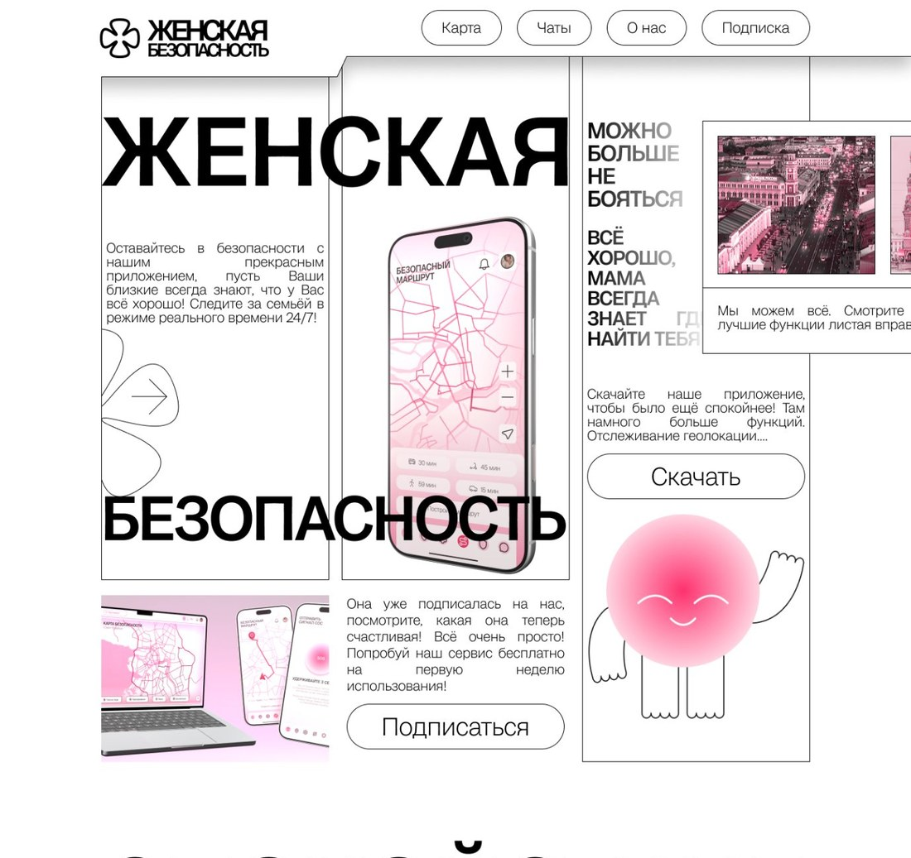
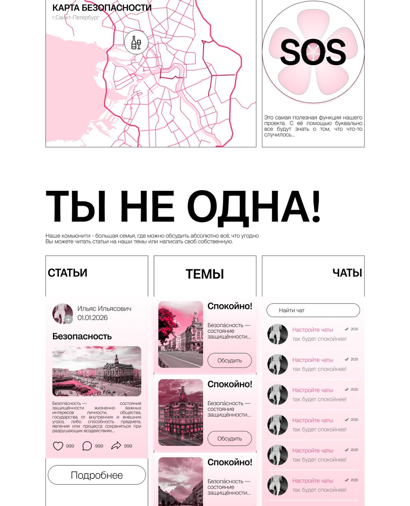
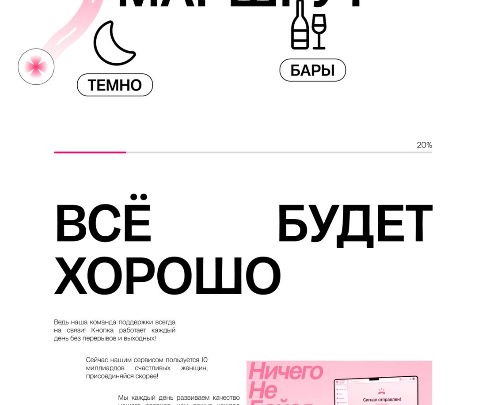
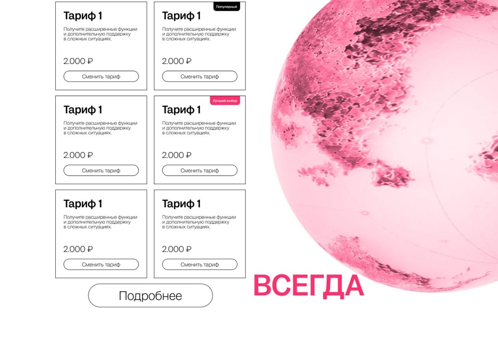

01Challenge
Рассказать о сервисе безопасности без давления и тревожности — и при этом ясно показать, что именно он умеет: близкие видят, что всё в порядке, в реальном времени.
StructureОффер, карта безопасности, SOS, комьюнити, тарифы
02Response
Карта безопасных маршрутов, экстренная SOS-кнопка и комьюнити-чаты — три опорных блока. Маршрут учитывает время суток, освещённость и места, которых стоит избегать поздним вечером.


03System
Узкие колонки в тонких рамках, крупный гротеск для заголовков и мягкий розовый как единственный акцент: функциональность читается, тревожность уходит.

04Value
Сценарий страницы, где оффер, функции и тарифы считываются по порядку.